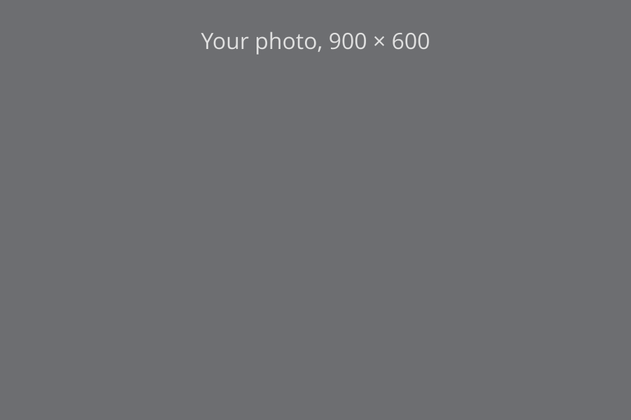

CMU Standard Components
What CMU's standard web template (standard-v6) already has, before you
reach for the kit. Every example uses only CMU's own classes; nothing in this section
needs the kit.
Cascade Sites
Cascade builds most of these from its own content types (WYSIWYG, Grid, Slideshow, and Wide) and sidebar options, so pick them there rather than pasting markup. The markup is for apps, and for the Source code view when you need one inside a WYSIWYG section.
Buttons and Links
A solid button for the main action on a page, ghost buttons for the rest, and a call
to action (cta) for a link that should stand out from the text.
external marks a link to another site.
btn, ghost, small, wide,
cta, external
Use <button class="btn"> for things that happen on the page and
<a class="btn"> for things that go somewhere.
Start the text with a verb that says what people will do, in Title Case. Let the
action lead; echoing the destination page's heading is nice when it fits, but not
required. A button is the page's main action and can go wherever that action happens,
such as an app's sign-in or a request form in another system. A call to action is a
next step on your own site or app. Any other link to another site is an ordinary
external link in sentence case, as in the last row; a link is a
cta or external, never both.
| Do | Don't |
|---|---|
| Add Categories, Random Photos, and More | Categories, random photos, and more |
| See the Loan Policies | Learn More |
| Load More Sections | Load More |
| Upload Syllabus | Syllabus Upload |
| Browse the code on GitHub | Browse the Code (to GitHub) |
Colors
A color class goes on a sidebar box or on a whole grid; boxes inside a grid stay
white. Add invert for white text on every color except
grey and gold, which take dark text. Keep to one or two
colors across a site, and repeat them for the same job, such as red for every sign-in
box. Under each class is the brand color it is, from
brand.cmu.edu, or
"template" where cmu.edu uses its own shade, a little darker so white text on it stays
readable. See also the kit's colors.
red, darkgrey, grey, blue,
teal, green, darkgreen, gold
Carnegie Red
template
Steel Gray
Blue Thread
template, near Teal Thread
template, near Green Thread
Hornbostel Teal
Gold Thread
<div class="sidebar">
<div class="teal invert"> … </div>
</div>
<div class="grid column3 blue invert boxes"> … </div>Globe and Plaid
Two background patterns that go with a color: globe, a faint map, and
plaid, the university tartan. Both come from the template's own image
files, so they follow the brand rules; never draw your own tartan. Use one for a
section bar or a feature section, not behind long text. The template shows them only
from 768px up; on phones the color is plain, and grey plaid has no gray
at all, so don't count on the pattern to set a section apart.
globe, plaid, with a color
<div class="content wide red invert globe"> … </div>
<div class="grid column3 darkgrey invert plaid"> … </div>File Table
A list of forms or documents to download, with when each was last changed, as on the
HUB's Forms & Documents. Use table.alternate with real column
headings, and put the file type after each link in plain text. The HUB puts its links
in <h4> headings to make them stand out; don't, since screen
readers then announce every row as a heading. A long page of them can go under
collapsed headings, as below.
table.alternate, cmu-full
| Form | Last Updated |
|---|---|
| Syllabus Template [Word] | Aug 2026 |
| Accessibility Checklist [PDF] | June 2026 |
| Department Administrator Guide [PDF] | Oct 2026 |
FAQ
Questions that open to show their answers. A heading with collapsed hides
everything after it, up to the next collapsed heading, until it's clicked; it needs
the template's script. In Cascade, add an Expand/Collapse Section for each question.
Style
It's FAQ, never "FAQs": the Q already means questions. Title the page Frequently Asked Questions, and use FAQ in links and running text (“see the FAQ”). Phrase each heading as the question someone would ask, ending in a question mark.
collapsed
Can I Join More Than One Queue?
Yes: you can hold one place in line for each of your courses.
What If I Miss My Turn?
Course staff can move you back to the front of the line once.
A long FAQ divides into categories, as on Transportation Services' FAQ. Each category
is its own .content block with an id, headed by an
<h1> whose text is in a rule-bottom span, so the rule
runs under the words. Give each question an id too: a link to it, such as
faq.html#miss-turn, opens that answer when the page loads. With more than
a few categories, list them in an
On This Page box in the first block's
sidebar.
Joining a Queue
Can I Join More Than One Queue?
Yes: you can hold one place in line for each of your courses.
What If I Miss My Turn?
Course staff can move you back to the front of the line once.
For Course Staff
How Do I Open Office Hours?
Select Open Office Hours on your course's page. Students can join as soon as it's open.
Can I Pause the Queue?
Yes. Pausing stops new students from joining; everyone already in line keeps their place.
Photo Captions and Credits
A photo with a caption under it, as on CMU News stories. Use Cascade's image block, or
figure.image with a <figcaption>: the template sets
the caption in italics and spaces the figure from the text below. Put
floatright or floatleft on the image to set the figure
beside the text at half width; on phones it goes full width.
figure.image, figcaption, floatright,
floatleft

The page's own text goes here, beside the photo. The figure floats right at half width from 550px up, and the text wraps around it.
Credits go at the end of the caption, in parentheses, in the caption's own style; CMU sites don't use a separate credit line or credit class.
- Photos by University Communications & Marketing need no credit.
- Someone else's photo or work: "(Courtesy of Name)" for a photo given to you, or "(Photo: Name)" for a photographer.
- Creative Commons: name the author, link the source and the license, and say if you changed it: "(Photo: Author, CC BY 4.0, cropped)".
- Never put the credit in the alt text. Alt text describes the picture; a screen reader would read the credit as part of it.
Videos
A YouTube video in the page, or beside a few sentences about it on a band, as on
Wellbeing's home page. Paste YouTube's embed code (Share, then Embed) and keep its
width and height: the template's script fits the video to
its column and keeps that shape, on phones too.
-
Give it a
titlethat names the video, not "YouTube video player": screen readers announce it for the frame. -
Use
youtube-nocookie.comin the address instead ofyoutube.com, so YouTube doesn't set its tracking cookies until someone plays the video. - Turn on captions in YouTube, and check them: automatic captions get names and terms wrong.
-
Add
loading="lazy"so the video loads only when someone scrolls to it.
iframe, grid column2 grey
CMU and the I'm fine. Project
A few sentences about the video: who's in it, and why to watch.
Block Quotes
A quote set large, with a thin line beside it, to let someone else make the page's
point: a student, a faculty member, someone your office helped. Use the template's
<blockquote>, with the words in a <p> as Cascade
writes them (as on Wellbeing's Wellness Initiatives page); it's smaller in a sidebar
and turns white on a color band (invert). Keep it to a sentence or two.
-
Say who said it in a
<figcaption>, with the quote in a<figure>: their name, then their role. The name goes outside the<blockquote>, which holds only their words. - Quote real people, with their permission, and don't add quotation marks: the size and the line already mark it as a quote.
- Not for indenting text. A block quote is someone's words; for a note or an aside, use a callout.
blockquote, figure, figcaption,
invert
Reserving a camera took a minute, and the kit had everything our film needed.
Camera Kits
The page's own content goes here, beside the quote.
The checkout desk is the first place I send new students.
And More
-
Tables:
table.alternatefor striped rows; see Tables. - Bio, News, and Course pages: Cascade page types with their own layouts and indexes.
-
Load More: news and bio indexes show 12 items, then a
btn ghost wideLoad More button that shows 12 more each time. Cascade writes the markup; you don't. In an app, the kit's Load More matches it.